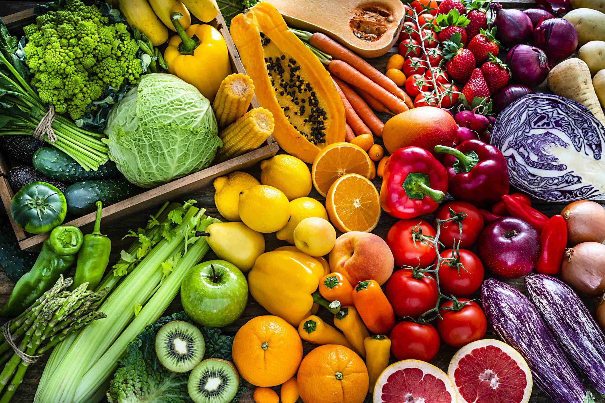

Boas-vindas ao nosso site de nutrição
Uma alimentação equilibrada ajuda a manter a saúde, previne doenças e melhora a qualidade de vida.
Principais dicas:
- Consuma frutas e vegetais diariamente
- Mantenha uma alimentação saudável
- mantenha un equilibrio entre proteinas, carboidratos e gorduras.
- Evite beber bebida alcoólica